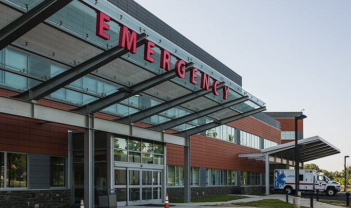

Ransomware Attack against 3 hospitals in Alabama
Three hospitals in Alabama have been hit with paralyzing ransomware attacks that affected their ability to take new patients.
All three hospitals that make up the DCH Health System in Alabama were closed to new patients, as officials there coped with an attack that paralyzed the health network's computer system. The hospitals
DCH Regional Medical Center
in Tuscaloosa,
Northport Medical Center
, and
Fayette Medical Center
turned away
all but the most critical patients
. Local ambulances were being instructed to take patients to other hospitals when possible. Patients coming to DCH emergency rooms faced the possibility of being transferred to another hospital once they were stabilized.
Details about the specific strain of malware weren't immediately available. Typically, the malware encrypts production and backup hard drives used to store data and run computer systems. Victims can only receive the decryption key needed to restore systems after paying a ransom, usually using bitcoin or another cryptocurrency.In some cases, it's possible to decrypt data without paying the ransom. In other cases, it's impossible.

How could hospital ransomware attacks affect healthcare?
As previously mentioned, healthcare ransomware attacks could be particularly devastating to a covered entity. With more organizations implementing connected medical devices and creating BYOD strategies or allowing mobile devices to be regularly used, there are more potential access points for unauthorized users. If a hospital cannot access its own EHR, patient care could be delayed or hindered. This is why it's critical for covered entities to implement the necessary security measures, such as advanced malware protection, anti-virus, firewalls, and email/web security.